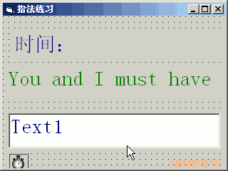
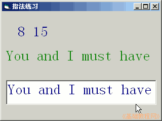

2011-2012 第一学期九年级 VB 教学课程设计
作者：TeliuTe 来源：基础教程网
八、判断输入完成 返回目录 下一课
学习目标：学会让计时器停下来；
注意事项：代码越来越多，先抄一遍熟悉；
1、绘制控件
1）打开一个标准EXE，绘制两个标签，一个文本框，
Label1的Caption属性改为“时间：”，另一个标签改为“You and I must have”
2）设置好控件的字体和颜色；

3）进入代码窗口，点击对象下拉列表，依次选择“通用、Text1、Timer1”，在出来的代码段中分别输入；
'通用
dim i, j, k as integer
'Text1
i = len(label2.caption)
j = len(text1.text)
if i = j then
timer1.enabled = false
end if
'Timer1
k = k + 1
label1.caption = str(i)+str(j)+str(k)
4）保存为“第八课”，点菜单“运行－启动”，在文本框中输入内容；

板书设计：第8课 定时器（计时）
1.窗体、两个标签（A）、文本框 属性
2.画一个定时器，设为1000
3.进入代码窗口：通用，Text1，Timer1
课后记 2011-10-14 16:41：
感觉学生上课不是很积极，明显有些疲惫
还没发现旷课留班里写作业或者跑外面玩的
--
讲解的时候回答提问不积极，只是坐着等着
讲的时候稳一些，别着急也别急躁仓促
--
第一个班只演示了界面，结果输代码出现很多问题
代码输入仍然是难点，拼写错误居多
--
用下拉列表进入代码段，只用默认的代码段
有的把三段写一起了，有的写到end sub外面了
--
要求带本子记笔记，抄代码大约2分钟就够了
抄的时候讲不好，先讲完再抄可能要好些
--
用写字板来演示代码，数字标成红色，字体用英文的 A.. Black
把讲解的顺序再理一理
--
进去之前先说一下，出错多的就是输代码
要求细心，老师让抄代码就抄，别偷懒
--
几个班还是有差异，这个班就比较顺
可能是开头的几节课就比较好，速度快细心出错少
--
如果每次都很顺利，那么每次学都比较有自信也认真
开始的时候就把容易出错的地方找出来克服
--
讲解的时候别急躁，自己提醒下，语气用一惯的平稳
学生输的时候就检查一下label这个单词是否有错
--
4班学生上课还是问题，鱼龙混杂的毛病
光去讲纪律了，也是个问题，学习习惯不能放
--
程序有个问题，不能数最后一个
跟上节连贯没改了，只要停下来就可以了
本节学习了判断输入完成的基础知识，如果你成功地完成了练习，请继续学习下一课内容；
返回目录 下一课
本教程由86团学校TeliuTe制作|著作权所有
基础教程网：http://teliute.org/
美丽的校园……
转载和引用本站内容，请保留版权信息和本站链接。